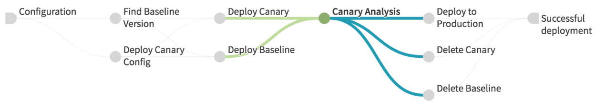

Set Sail with Spinnaker and Artifactory
Created by Clay McCoy
latest version of slides is on Github
git clone https://github.com/claymccoy/SpinnakerArtifactory.git open SpinnakerArtifactory/index.html
Clay McCoy
- @ClayMcCoy
- Helped start Spinnaker at Netflix
- Principal Software Engineer @ Pivotal
Outline
- Continuous (Integration | Delivery)
- Spinnaker
- Inventory
- Pipelines
- Artifactory
- Build Info
- AQL
- Spinnaker Artifactory Integration
Continuous Integration

Using a CI Tool for CD
- script at the end of a successful build
- bolted on support in some CI tools
- lack inventory and best practices
Dedicated Delivery Tool
- cloud inventory
- zero-downtime blue/green deployments
- canary analysis
- rollbacks
Artifact is CI/CD Boundary
from "Scaling Application Deployments Across Target’s platforms (Cloud Next '18)"Dedicated Delivery Tool
But first...
Asgard
- monolith Grails web app
- deployment to AWS only
- manual control of cloud inventory
- open sourced on Github
Spinnaker
- several (micro)services
- deployment to many clouds
- automate cloud inventory with pipelines
- open sourced on Github

Inventory
Pipeline
https://www.spinnaker.io/guides/user/pipeline/expressions/Stages
https://www.spinnaker.io/reference/pipeline/stages/Expressions
https://www.spinnaker.io/reference/pipeline/expressions/Deployment Strategies
https://www.spinnaker.io/conceptsCanary Analysis
 https://cloud.google.com/solutions/automated-canary-analysis-kubernetes-engine-spinnaker
CI Releases Artifacts to Artifactory
CD Deploys Artifacts from Artifactory
Artifactory Build Info
Artifactory Build Info
- See published builds and results
- Explore relationships between published artifacts and dependencies
- Obtain information about the build environment
Publishing Build Info to Artifactory
https://www.jfrog.com/confluence/display/RTF/Build+IntegrationArtifactory Query Language (AQL)
// Return all artifacts of the "artifactory" build.
items.find({"@build.name":{"$eq":"artifactory"}})
// Return all builds that have a dependency with a license that is not Apache.
builds.find({"module.dependency.item.@license":{"$nmatch":"Apache-*"}})
// Return all archives containing a file called "org/artifactory/Main.class".
items.find({"archive.entry.name":{"$eq":"Main.class"} , "archive.entry.path":{"$eq":"org/artifactory"}})
AQL Model
 https://www.jfrog.com/confluence/display/RTF/Artifactory+Query+Language
https://www.jfrog.com/confluence/display/RTF/Artifactory+Query+Language
Get Latest Artifacts with Build Info
items.find({
"repo":"libs-snapshot-local",
"modified":{"$gt":"2019-05-21T16:53:11.671Z"},
"path":{"$match":"*"},
"name": {"$match":"*.pom"}
}).include("path", "repo", "name", "artifact.module.build")
Spinnaker/Artifactory Integration
Jenkins Trigger
Artifactory Trigger

Metadata Stowaways
Setup
Publish Build Info
node {
def server = Artifactory.server 'local_artifactory'
def rtMaven = Artifactory.newMavenBuild()
def buildInfo
stage ('Clone') {
git url: 'https://github.com/claymccoy/springDeployTest.git'
}
stage ('Artifactory configuration') {
rtMaven.tool = 'M3'
rtMaven.deployer releaseRepo: 'libs-release-local', snapshotRepo: 'libs-snapshot-local', server: server
rtMaven.resolver releaseRepo: 'libs-release', snapshotRepo: 'libs-snapshot', server: server
buildInfo = Artifactory.newBuildInfo()
buildInfo.env.capture = true
}
stage ('Exec Maven') {
rtMaven.run pom: 'pom.xml', goals: 'clean install', buildInfo: buildInfo
}
stage ('Publish build info') {
server.publishBuildInfo buildInfo
}
}
Artifactory Trigger
https://www.spinnaker.io/guides/tutorials/codelabs/artifactory-to-cf/Deployment Artifact
https://www.spinnaker.io/guides/tutorials/codelabs/artifactory-to-cf/Configure Server Group
https://www.spinnaker.io/guides/tutorials/codelabs/artifactory-to-cf/Deploy!
Version Metadata
trace server group back to...
- artifact version deployed
- build that produced artifact
- commit using either link (directly in Spinnaker too?)
- Jira issues in the future?